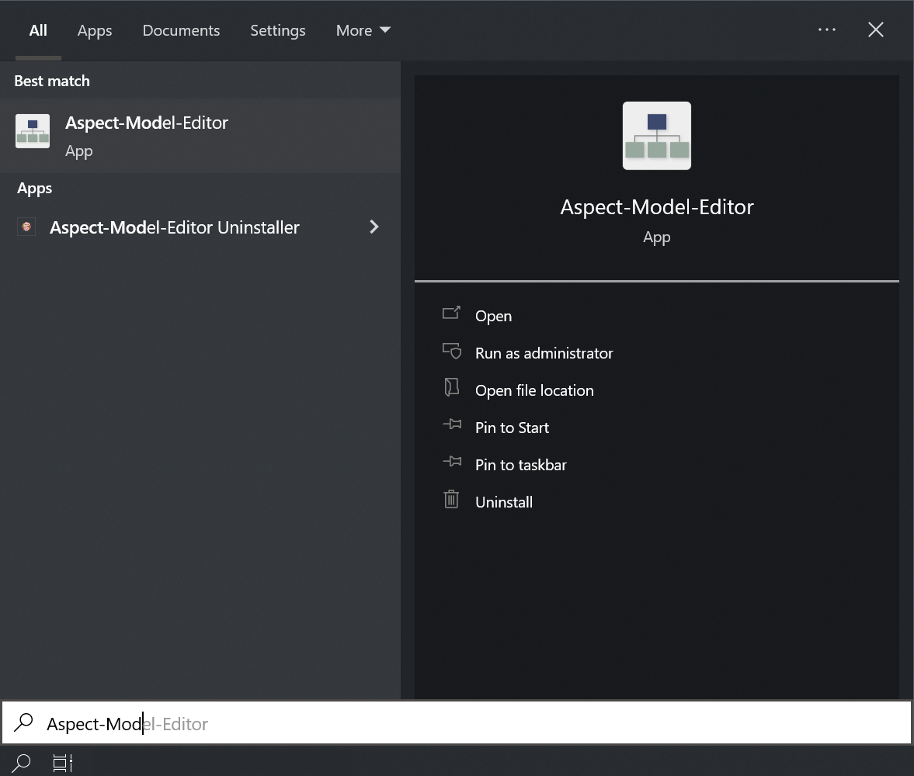

Install the Aspect Model Editor
Preparation
Before you install the latest version of the Aspect Model Editor, make sure you have covered the following:
-
Check that your system meets the system requirements.
-
Login with administrator permissions to install or uninstall the Aspect Model Editor.
-
If you have previously installed the Aspect Model Editor, see Upgrade.
-
Download the installation file for your system from the Aspect Model Editor release page.
We offer assets for the following operating systems:
Install the Aspect Model Editor on Windows
To install the Aspect Model Editor, proceed as follows:
-
Download the installer
aspect-model-editor-v<VERSION>-win.exefrom the Aspect Model Editor releases. -
Double-click the
.exefile to run the installer. No administrator permissions are required, the Aspect Model Editor is installed for the current user only. -
Click Next on the Welcome screen.
-
Select the preferred installation location (default: %LOCALAPPDATA%\Aspect Model Editor), then click Next.
Long paths and paths containing whitespaces may lead to incorrect installation or incorrect behavior of the application. Choose a short destination path – preferably the one suggested by the installer by default. For further information, see Known issues. -
Confirm the Start Menu folder (default: ESMF) and click Install.
→ The installation is executed. If the Microsoft Edge WebView2 Runtime is not yet available on your system, the installer downloads and installs it.
-
Click Finish to close Setup. Keep Create desktop shortcut checked if you want a shortcut on your desktop.
→ After the installation you will find the Aspect Model Editor in the folder you chose previously and in the Start Menu. Your workspace for Aspect Models is created at %USERPROFILE%\aspect-model-editor.
| An installation of an earlier version that was installed with the former installer is removed automatically. You may be asked to confirm this with administrator permissions. |
Start the Aspect Model Editor on Windows
To run the Aspect Model Editor, no administration permissions are required.
Use one of the following alternatives:
-
Navigate to the previously chosen installation location of the Aspect Model Editor and double-click the
Aspect-Model-Editor.exefile. -
Open the Start Menu folder ESMF and click Aspect Model Editor.
-
On Windows, press the Windows key, type
Aspectto filter for the Aspect Model Editor, and click Open.

Install the Aspect Model Editor on Mac
To install the Aspect Model Editor, proceed as follows:
-
Download the disk image for your Mac from the Aspect Model Editor releases:
-
aspect-model-editor-v<VERSION>-mac-arm64.dmgfor Macs with Apple silicon (M1 or later), -
aspect-model-editor-v<VERSION>-mac-x64.dmgfor Macs with Intel processor.To find out which processor your Mac has, open the Apple menu → About This Mac and check the entry Chip (Apple silicon) or Processor (Intel).
The releases also contain the app without disk image (
aspect-model-editor-v<VERSION>-mac-<arm64|x64>.app.zip). Unpack it and move Aspect Model Editor into the Applications folder; the following two steps are then not needed.
-
-
Double-click the downloaded
.dmgfile to open it. -
Drag and drop Aspect Model Editor into the Applications folder shown in the window.
-
Eject the disk image.
In case you are prompted, agree that the sources come from a trustful source.
The Aspect Model Editor is currently not notarized or signed with an Apple Developer certificate. macOS Gatekeeper may therefore block the app from starting. For details and workarounds, see Current limitations on macOS.
→ By default, the workspace is created at /Users/<YOUR-USER-NAME>/aspect-model-editor .
Install the Aspect Model Editor on Linux
To install the Aspect Model Editor, proceed as follows:
-
Download one of the Linux assets from the Aspect Model Editor releases:
-
aspect-model-editor-v<VERSION>-linux-amd64.debfor Debian-based distributions (e.g. Ubuntu), -
aspect-model-editor-v<VERSION>-linux-glibc-v<GLIBC-VERSION>.AppImageas portable application for other distributions. The AppImage requires at least the glibc version stated in the file name.
-
-
Install the package, e.g. with
sudo apt install ./aspect-model-editor-v<VERSION>-linux-amd64.deb, or make the AppImage executable withchmod +x aspect-model-editor-v<VERSION>-linux-glibc-v<GLIBC-VERSION>.AppImage.In case you are prompted, agree that the sources come from a trustful source.
→ By default, the workspace is created at /home/<YOUR-USER-NAME>/aspect-model-editor .
Verify the installation
The following steps apply regardless of your operating system. To verify that your installation was executed successfully, proceed as follows:
-
Open the Aspect Model Editor.
-
Open the Movement example that came with the editor (see Load or start a new model).
-
Click Validate in the toolbar.
→ If the validation of the built-in example is executed, your installation was successful. In that case, the background validation service is working properly, and you can start working with the Aspect Model Editor.
For more information on validation, see Validation and notifications.
Uninstall the Aspect Model Editor
Uninstall the Aspect Model Editor on Windows
To uninstall the Aspect Model Editor, proceed as follows:
-
Open Settings → Apps → Installed apps (on older Windows versions: Apps & features).
-
Search for Aspect Model Editor, click … (or select the entry) and click Uninstall.
Alternatively, run
uninstall.exein the installation folder of the Aspect Model Editor. -
Confirm the uninstallation. A running instance of the Aspect Model Editor is closed automatically.
Optionally, check Delete the application data to also remove the application settings.
→ The Aspect Model Editor was deleted from your system. Your workspace folder at %USERPROFILE%\aspect-model-editor is not removed automatically. Delete it manually if you no longer need your saved Aspect Models.
Uninstall the Aspect Model Editor on Mac
To uninstall the Aspect Model Editor, proceed as follows:
-
Close any running instance of the Aspect Model Editor.
-
Open Finder → Applications.
-
Drag the Aspect Model Editor app to the Trash, or right-click it and select Move to Trash.
-
Empty the Trash to permanently remove the application files.
→ The Aspect Model Editor was deleted from your system. Your workspace folder at /Users/<YOUR-USER-NAME>/aspect-model-editor is not removed automatically. Delete it manually if you no longer need your saved Aspect Models.
Uninstall the Aspect Model Editor on Linux
To uninstall the Aspect Model Editor, proceed as follows:
-
Close any running instance of the Aspect Model Editor.
-
Remove the installed package via your distribution’s package manager (e.g.
sudo apt remove aspect-model-editor), or delete theAppImagefile, depending on how you installed it.
→ The Aspect Model Editor was deleted from your system. Your workspace folder at /home/<YOUR-USER-NAME>/aspect-model-editor is not removed automatically. Delete it manually if you no longer need your saved Aspect Models.
Upgrade the Aspect Model Editor
See the release notes to find out what changed in the version you want to upgrade to.
To upgrade the Aspect Model Editor to the latest version, proceed as follows:
-
First uninstall the existing installation. See Uninstall the Aspect Model Editor.
-
Run a new installation with your required version of the Aspect Model Editor. See Preparation to choose the download for your operating system.
| You can have only one installation of the Aspect Model Editor on your local machine. In case you have already an older version, uninstall it first and then install the latest version. |